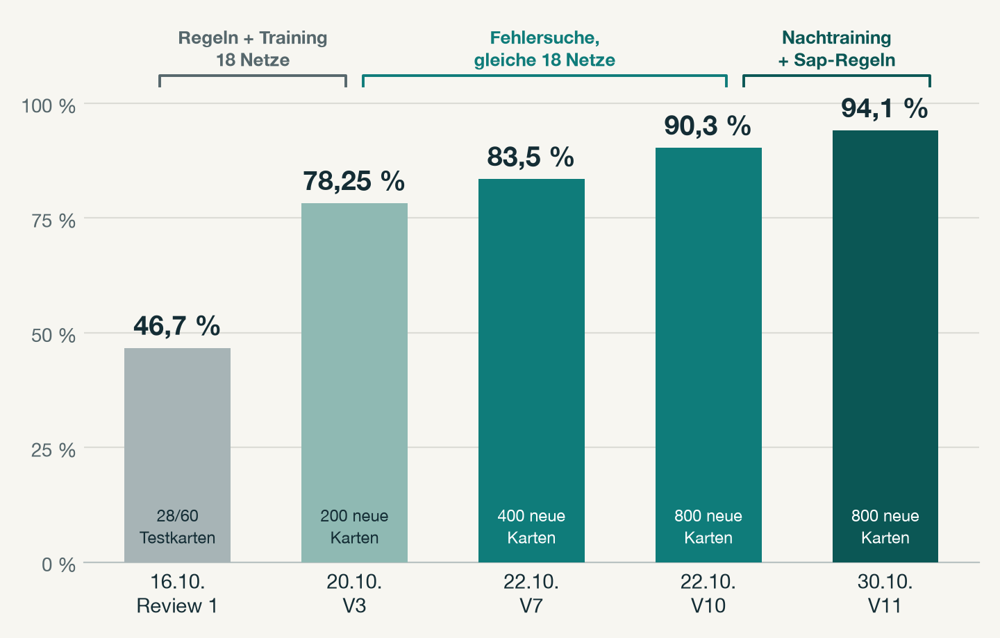
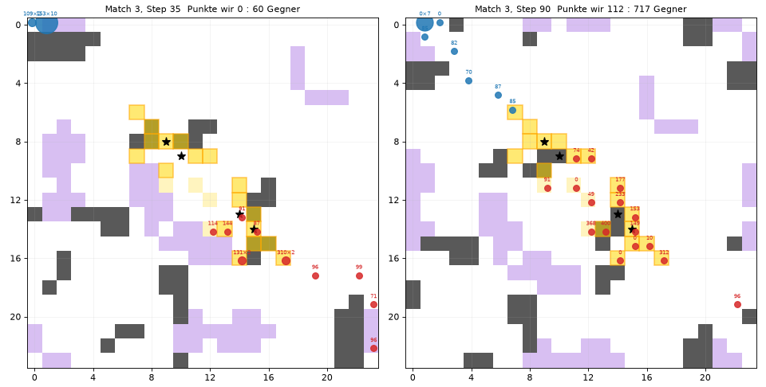
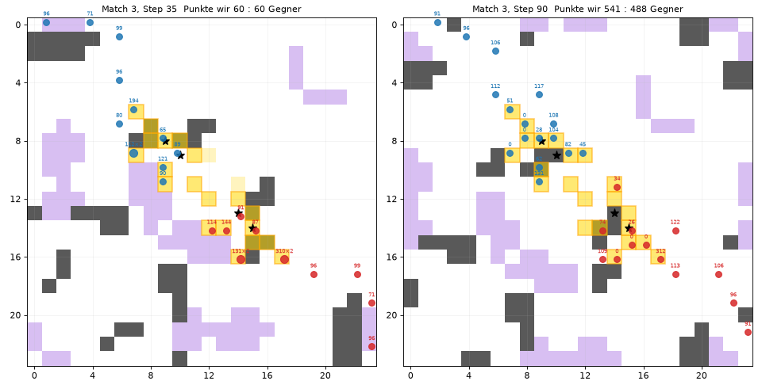

| 1. | Was Sherlock bekommt und zurückgibt |
| 2. | Ein Spielschritt: Gedächtnis, Netze, Maske, Regeln |
| 3. | Training der Netze |
| 4. | Von 47 % auf 94 % |
| 5. | Neu seit letzter Woche |
| 6. | Erkenntnisse und Battle |
| 1. | Was Sherlock bekommt und zurückgibt |
| 2. | Ein Spielschritt: Gedächtnis, Netze, Maske, Regeln |
| 3. | Training der Netze |
| 4. | Von 47 % auf 94 % |
| 5. | Neu seit letzter Woche |
| 6. | Erkenntnisse und Battle |
| 0 | stehen |
| 1–4 | hoch, rechts, runter, links |
| 5 | Sap (Schuss) auf Feld (dx, dy) |
Karte, Relics und Punktefelder über alle 3 Matches
jede Einheit ein eigenes Ziel, nach Weglänge verteilt
79 Zahlen je Einheit: Lage, Ziel, Umgebung, Gegner
bewerten die 6 Aktionen mit Q-Werten, wir mitteln
verbotene Aktionen streichen, beste erlaubte nehmen
korrigieren Sackgassen, Nebel, doppelte Schüsse
| Punktezuwachs in diesem Schritt | 3 |
| besetzte Felder | 4 |
| davon schon bewiesene Punktefelder | 2 |
| Also: von den 2 übrigen Feldern bringt genau 1 einen Punkt |
| Aktion | erlaubt, wenn … |
| Stehen | immer |
| Zug | genug Energie, Zielfeld auf der Karte, kein Asteroid |
| Zug, im Spiel | zusätzlich kein mindestens gleich starker Gegner auf oder neben dem Zielfeld |
| Sap | Gegner in Reichweite und genug Energie |
| stehen | 51,0 | |
| hoch | 51,3 | |
| rechts | 52,2 | ✓ gespielt |
| runter | 53,8 | ✗ Asteroid |
| links | 51,2 | ✗ Kartenrand |
| Sap | 47,6 | ✗ kein Gegner |
| Gruppe | Netze | Spiele je Netz | Gegner nach 25 % Aufwärmen gegen default |
| A | 6 | 3.000 | abwechselnd default und Solution_92 |
| B | 6 | 4.000 | 70 % Solution_92, Rest default |
| C | 6 | 4.000 | 60 % Solution_92, 20 % eigene alte Agenten; Strafe für Gegnerpunkte |
| Nachtraining | 18 Kopien | + 5.500 | alle heutigen Regeln aktiv; 70 % Solution_92 und zwei Varianten, 20 % eigene Abgaben, Rest default und Rush-Bot |
| Regel greift ein | Anteil |
| Nur Erkundungsziel: direkt hinlaufen statt warten | 4,7 % |
| Schädlichen Nebel umgehen | 1,0 % |
| Kein Schuss auf ein schon sicher getroffenes Ziel | 0,8 % |
| Sackgasse: kürzesten Weg nehmen | 0,7 % |
| Auf dem Punktefeld stehen und schießen | 0,5 % |
| In eine Gruppe schießen (bei vollem Streuschaden schon ab 2 Treffern) | 0,35 % |

| Streuschaden beim Sap | V10 | V11 |
| 25 % auf Nachbarfelder | 91,4 % | 94,5 % |
| 50 % | 91,0 % | 95,4 % |
| 100 % | 86,7 % | 92,5 % |
92 % der Aktionen kommen unverändert aus den Netzen. Eine einfache Regel statt der Netze gewann nur 3 % statt 38 %.
Fehler im Agenten finden brachte 78 → 90 %. Danach half Training wieder, aber erst unter den heutigen Regeln: 90 → 94 %.
Hürden vorab festlegen. Beispiel: eine Mischung lag in der Auswahl vorn, auf 1.600 neuen Spielen nur +1,8 statt der verlangten +2 Punkte. Nicht übernommen.


| Sap (Schuss) | im ganzen Quadrat bis zur Reichweite (3–7); Ziel verliert die Schusskosten, Nachbarfelder einen Anteil (Streufaktor 0,25 / 0,5 / 1, verdeckt) |
| Kollision | Stehen Einheiten beider Teams auf einem Feld, überlebt nur das Team mit mehr Gesamtenergie; bei Gleichstand sterben beide |
| Energie-Sog | Benachbarte Gegner ziehen Energie ab (Faktor verdeckt, 1/16 bis 3/8) |
| Drift | Asteroiden und Nebel verschieben sich alle 7–40 Schritte diagonal |
| Relics | bis zu drei Paare; ein neues Paar kann in Match 2 und 3 in den ersten 50 Schritten erscheinen |